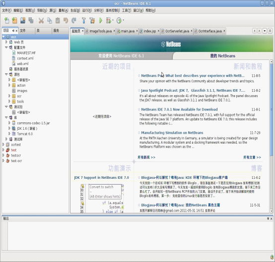

站长原创，版权所有ITEEDU，2011-07-29
确保PC机上有ubuntu、java虚拟机、netBeans。
而且netBeans可以运作起来。
下载tomcat,解压缩，并进入到其目录中在conf目录中打开tomcat-users.xml文件，其内容如下：
<?xml version='1.0' encoding='utf-8'?>
<!--
Licensed to the Apache Software Foundation (ASF) under one or more
contributor license agreements. See the NOTICE file distributed with
this work for additional information regarding copyright ownership.
The ASF licenses this file to You under the Apache License, Version 2.0
(the "License"); you may not use this file except in compliance with
the License. You may obtain a copy of the License at
http://www.apache.org/licenses/LICENSE-2.0
Unless required by applicable law or agreed to in writing, software
distributed under the License is distributed on an "AS IS" BASIS,
WITHOUT WARRANTIES OR CONDITIONS OF ANY KIND, either express or implied.
See the License for the specific language governing permissions and
limitations under the License.
-->
<tomcat-users>
<!--
NOTE: By default, no user is included in the "manager-gui" role required
to operate the "/manager/html" web application. If you wish to use this app,
you must define such a user - the username and password are arbitrary.
-->
<!--
NOTE: The sample user and role entries below are wrapped in a comment
and thus are ignored when reading this file. Do not forget to remove
<!.. ..> that surrounds them.
-->
<!--
<role rolename="tomcat"/>
<role rolename="role1"/>
<user username="tomcat" password="tomcat" roles="tomcat"/>
<user username="both" password="tomcat" roles="tomcat,role1"/>
<user username="role1" password="tomcat" roles="role1"/>
-->
</tomcat-users>
在</tomcat-users>紧上边添加：
<role rolename="admin" />
<role rolename="manager" />
<user username="admin" password="admin" roles="admin"/>
<user username="ocr" password="ocr" roles="admin,manager"/>
<user username="manager" password="manager" roles="manager"/>
启动tomcat，进入其tomcat解压缩目录下的/bin目录中./startup.sh
在网页中输入：http://localhost:8080
进入到tomcat首页，则tomcat安装成功。
在netBeans中新建java web程序，并将tomcat添加进入，其中首次添加需要输入tomcat用户名称和密码。
注意，该处的用户需要具有administrator的权限。
然后，在netBeans中开发我们的程序，ocr项目的目录如图1所示：

图1 生成的目录
新建一个tools包，添加文件：ImageTools.java，其内容如下 ：
package tools;
import java.io.FileInputStream;
import java.io.FileOutputStream;
import java.io.IOException;
import java.io.InputStream;
import java.io.OutputStream;
import org.apache.commons.codec.binary.Base64;
public class ImageTools {
public static String GetImageStr() {// 将图片文件转化为字节数组字符串，并对其进行Base64编码处理
String imgFile = "/home/administrator/test3.jpg";// 待处理的图片
InputStream in = null;
byte[] data = null;
// 读取图片字节数组
try {
in = new FileInputStream(imgFile);
data = new byte[in.available()];
in.read(data);
in.close();
} catch (IOException e) {
e.printStackTrace();
}
// 对字节数组Base64编码
return Base64.encodeBase64String(data);// 返回Base64编码过的字节数组字符串
}
public static boolean GenerateImage(String imgStr) {// 对字节数组字符串进行Base64解码并生成图片
if (imgStr == null) // 图像数据为空
{
return false;
// BASE64Decoder decoder = new BASE64Decoder();
}
try {
// Base64解码
byte[] b = Base64.decodeBase64(imgStr);
// for (int i = 0; i < b.length; ++i) {
// if (b[i] < 0) {// 调整异常数据
// b[i] += 256;
// }
// }
// 生成jpeg图片
String imgFilePath = "/home/administrator/tmp.jpg";// 新生成的图片
OutputStream out = new FileOutputStream(imgFilePath);
out.write(b);
out.flush();
out.close();
return true;
} catch (Exception e) {
return false;
}
}
}
新建1个包ocr，添加文件：OcrInterface.java，其内容如下
package ocr;
import java.io.BufferedReader;
import java.io.InputStreamReader;
/**
*
* @author administrator
*/
public class OcrInterface {
public static String Tesseract(String path){
Runtime rn = Runtime.getRuntime();
Process p = null;
String text = "";
try {
String command = "image-ocr "+path;
p = rn.exec(command);
BufferedReader buf = new BufferedReader(new InputStreamReader(p.getInputStream()));
String temp = buf.readLine();
do {
text += temp+"\n";
temp = buf.readLine();
} while (temp != null);
} catch (Exception e) {
System.out.println("Error win exec!");
}
return text;
}
}
新建1个包action，添加文件：OcrServerlet.java，其内容如下
package action;
import java.io.*;
import javax.servlet.*;
import javax.servlet.http.*;
import ocr.OcrInterface;
import tools.ImageTools;
/**
*
* @author administrator
*/
public class OcrServerlet extends HttpServlet {
/**
* Handles the HTTP <code>POST</code> method.
* @param request servlet request
* @param response servlet response
*/
@Override
protected void doPost(HttpServletRequest request, HttpServletResponse response)
throws ServletException, IOException {
String data =request.getParameter("data");
// System.out.println(request.getParameter("data"));
ImageTools.GenerateImage(data);
String text = "";
String path = "/home/administrator/tmp.jpg";
text = OcrInterface.Tesseract(path);
//System.out.println("处理完毕的字符串:\n" + text);
response.setCharacterEncoding("utf-8");
PrintWriter out = response.getWriter();
out.write("处理完毕的字符串:\n" + text);
out.close();
}
}
可以接收客户端传递过来的图片内容，并且返回图片上的文字信息啦，呵呵